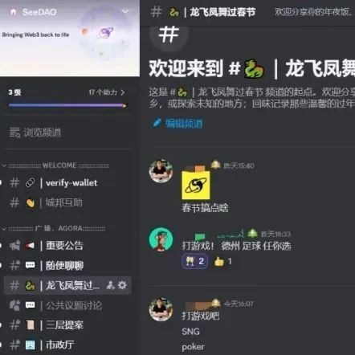

龙飞凤舞庆新春 | 来SeeDAO春节频道一起玩~
作者: SeeDAO
分类:
SeeDAO

龙年春节临近，市政厅内容伙伴在Discord上为大家准备了一个全新频道 — “龙飞凤舞过春节”在这个频道中，热情欢迎分享你的年夜饭、过年习俗和故事、可爱萌宠或是新春旅行照片等 …在文字和相片中，捕捉春节的每一个瞬间，无论是围炉之乐的年夜饭，还是充满传统情感的过年习俗，疗愈身心的可爱萌宠或是带着家的陪伴的春节假期旅行。带我们一起去到你的家乡，或探索未知的地方；探寻那家乡的年夜饭，回味记录那些温馨的过年习俗，分享那些异域风情的美景和可爱萌宠的模样。在春节的热闹喜庆氛围中，我们一同感受那份家的温暖、家的喜悦、和家的陪伴。Discord春节频道
希望通过这个春节频道，让我们的 Web3城邦生活更加紧密，让我们的成员能在新的一年里相互感受到家的温暖和新春的喜悦。同时，我们还特别准备了SeeDAO Token奖励，只要你在春节频道中分享你的年夜饭、可爱萌宠、旅行照片、过年习俗和故事等(选择两项分享)，就有机会获 300 Token（共计10位）将以分享帖收获的点赞&评论数累计。DC春节频道：
https://discord.com/channels/841189467128594442/1202912057822027838注：之前参与城邦活动，mini春联已寄出, 快来看看大家收到的实物吧 ~